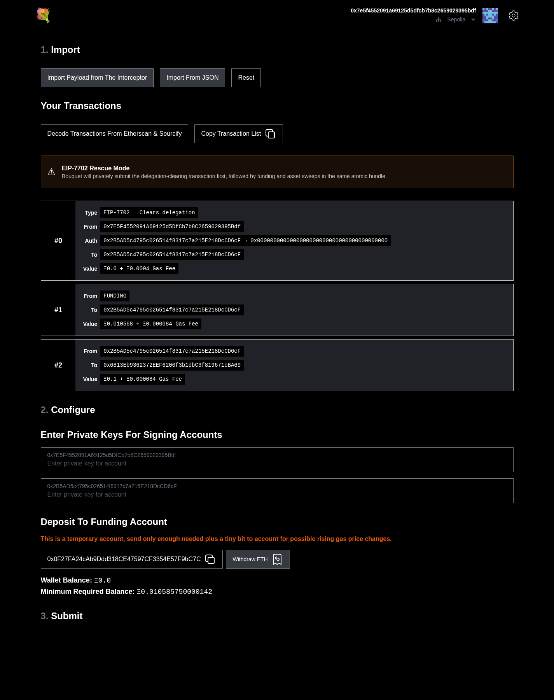
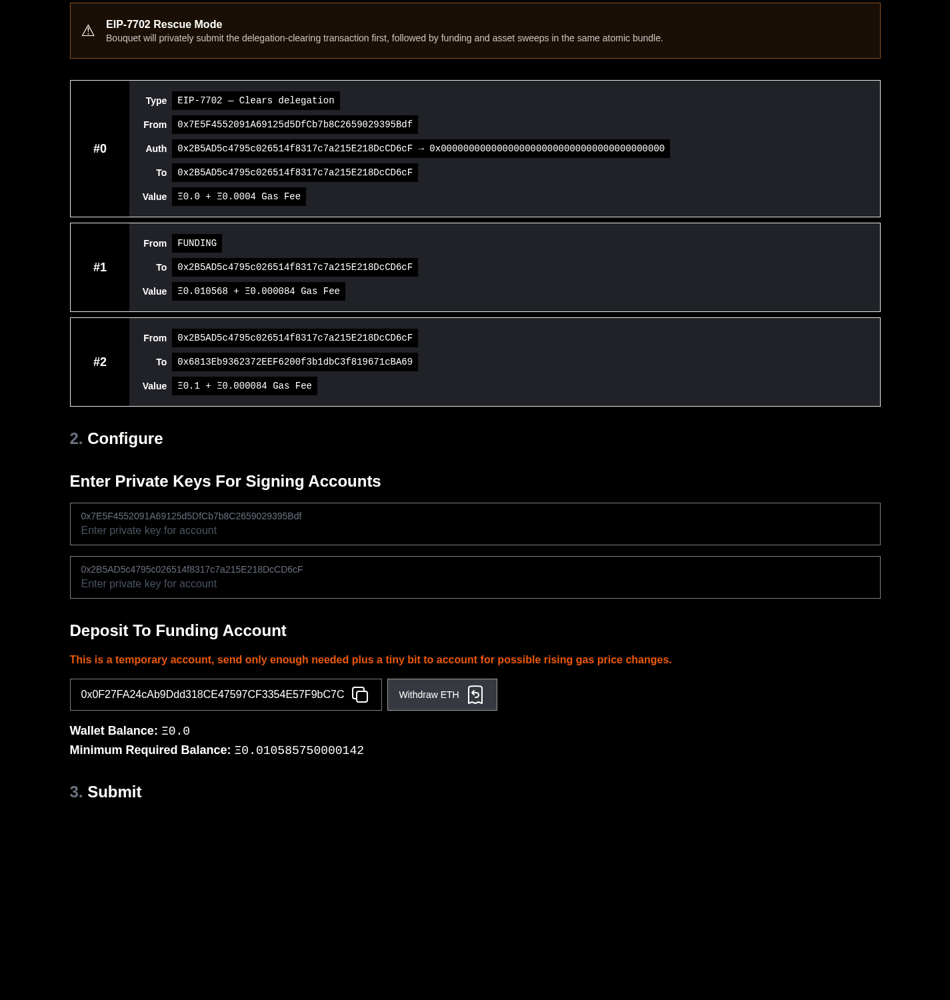

Interceptor rescue guide
How to safely rescue an EIP-7702 delegated wallet
A private, atomic rescue can remove a malicious delegation before the compromised wallet receives gas, then move its assets to safety in the same bundle.
This guide is specifically for an account affected by an EIP-7702 delegation. A malicious delegation can let hostile code act through the account. Simply sending ETH to the compromised wallet for gas may give an attacker the opportunity to take it.
The rescue avoids that window by submitting one private atomic bundle in this order:
- A separate, clean sponsor pays for an EIP-7702 transaction that clears the compromised account's delegation.
- The now-cleared account receives only the ETH needed for its rescue transactions.
- Tokens, NFTs, and any remaining ETH move to a new safe wallet.
Before you begin
- Install or update Interceptor.
- Open Bouquet from its official address.
- Prepare a new safe wallet and a separate clean sponsor wallet.
- Make sure the clean sponsor already has enough ETH to pay for the delegation-clearing transaction.
- Have the compromised account's private key available. Never paste it into a website you have not verified and never share it with anyone.
1Add the compromised address to Interceptor
Open Interceptor, select Change beside the active address, and add the compromised address. You do not need to import its private key into Interceptor.
2Switch to Simulating Mode
Confirm that Interceptor is in Simulating Mode. This lets you inspect and assemble the rescue transactions without broadcasting them.
3Enable Make Me Rich for the simulation
Turn on Make Me Rich below the active address. This only changes the simulated state, making it easier to test the complete rescue before real funds are involved.
4Create the clear-delegation transaction
Use your trusted rescue tool to prepare an EIP-7702 authorization for the compromised account with the delegation target set to the zero address:
0x0000000000000000000000000000000000000000
The authorization must use the correct chain ID and the compromised account's current authorization nonce. A separate clean sponsor must be the outer transaction sender and gas payer. Interceptor can inspect both eth_sendTransaction requests and signed type-4 transactions submitted through eth_sendRawTransaction.
5Add the asset transfers
While still simulating, create transfers that send each token, NFT, and any remaining ETH to the new safe wallet. Check every token contract and recipient address carefully. Leave enough ETH in the compromised account to pay for every transaction it signs.
6Export the simulation stack to Bouquet
Review the stack in Interceptor, then export it to Bouquet. The export preserves the EIP-7702 authorization, its recovered authority address, and the sponsored transaction sender so Bouquet can distinguish the compromised authority from the clean sponsor.
7Verify Rescue Mode and transaction order
Bouquet detects the zero-address authorization and enters EIP-7702 Rescue Mode. It should order the bundle as follows:
- Clear delegation — paid for by the clean sponsor.
- Funding — sent only after the delegation has been cleared.
- Sweep transactions — move the assets to the safe wallet.

Do not continue unless the authorization target is exactly the zero address and the clearing transaction is first.
8Configure signing and funding
In Bouquet, add the required keys to the matching accounts:
- The clean sponsor key signs the outer type-4 transaction and pays for clearing the delegation.
- The compromised account key signs its sweep transactions.
- If the imported authorization is already signed, Bouquet preserves that signature. The authority key is only needed when an authorization still needs signing.

Send the displayed amount to Bouquet's temporary funding account. This account funds the compromised wallet inside the atomic bundle, after the delegation is gone. Any unused ETH can be withdrawn after the rescue.
9Simulate the complete bundle
Run Bouquet's bundle simulation and inspect every result. Confirm that:
- the delegation is cleared before the compromised wallet is funded;
- every transaction succeeds in the displayed order;
- all asset recipients are your new safe wallet; and
- the bundle will be submitted through a supported private relay, never the public mempool.
10Submit and verify the rescue
Submit the atomic bundle privately. Monitor its status until it is included, then verify on a block explorer that the delegation is cleared and the intended assets arrived at the safe wallet. Finally, withdraw any unused ETH from Bouquet's temporary funding account.
What success looks like
- The compromised account no longer has EIP-7702 delegation code.
- The clean sponsor paid for the clearing transaction.
- Funding and sweeps landed in the same bundle, after the clearing transaction.
- The rescued assets are in a new safe wallet.
- No rescue transaction was exposed independently in the public mempool.